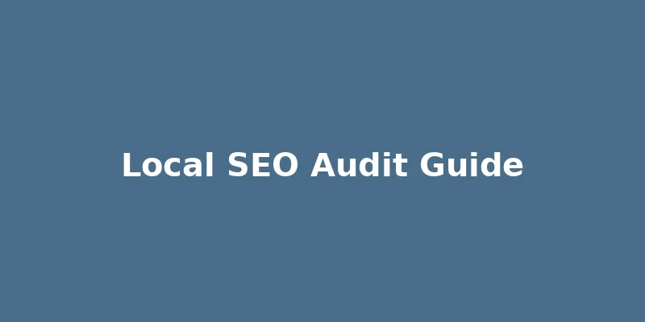

How to Conduct a Local SEO Audit for Your Business
Published on April 29, 2026

Just like a regular health check-up, a local SEO audit is crucial for assessing the current state of your online presence and identifying opportunities for improvement. A comprehensive audit helps you understand what's working, what's not, and what steps you need to take to enhance your local search rankings and attract more customers. This systematic review should be a recurring part of your local marketing strategy.
A local SEO audit typically involves several key areas. Start by evaluating your Google My Business profile: is it fully optimized, accurate, and are you actively managing reviews and posts? Next, analyze your website's on-page SEO for local relevance, including local keywords in your content, title tags, meta descriptions, and image alt text. Check for mobile-friendliness and website speed, as these are critical ranking factors.
Further steps include reviewing your local citation profile for NAP consistency across various online directories and assessing your backlink profile to ensure you have high-quality, local links. Finally, monitor your local search rankings for target keywords and analyze competitor strategies to identify gaps and opportunities. By regularly performing a local SEO audit, businesses can stay ahead of the curve, adapt to algorithm changes, and continuously refine their strategy to dominate local search results.
Back to Blog